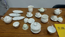

|  | 作品名稱 | 百花A Hundred Flowers |
| 作者 | 風清堂 Fengching Tang (studio) | |
| 年代 | 2019 | |
| 尺寸 | ||
| 作品說明 | 風清堂從1920年生產生活陶瓷迄今，已有100個年頭，風清堂將茶香與茶道文化的傳承視為使命。並於2020年開發出代表百年傳承的「百花譜」系列茶具，內容結合第4代傳人梁守如及梁守芬所研發的「工夫茶器」，以及第5代傳人吳宜芳及李鳴所設計的英式下午茶「百花系列作品」。 本款下午茶系列茶具以風清古瓷為體，再以原創粉彩手繪百花圖譜為襯，開發出多元活潑的日用茶器。讓下午的茶香或咖啡香不再平淡，而是饒富人生遍處皆風景，會心喜樂隨處皆可得的自在。 |